Hibridna arhitektura : Najbolje od oba svetova sa Supabasom i Spring Bootom
Објављено 14 January 2026
Umesto da birate između jednostavnosti Supabase i snage Spring Boota, zašto ne kombinirate oba? Otkrijte hibridnu arhitekturu koja iskorištava najbolje iz svake tehnologije.
- Lažna dilemma moderne arhitekture
- Arhitektonska Vizija
- Принципи концепције
- Orkestracija tokova
- Матрица одлуке
- Примери архитектуре по типу пројекта
- Strategija progresivne migracije
- Troškovi i operativna razmatranja
- Zaključak : Savršena Ravnoteža
- Napredujte dalje
- Perspektive razvoja
- Arhitektonski svedok
- Синтеза : Модерна архитектонска парадигма
- Коначни закљутак
Lažna dilemma moderne arhitekture
Pri izgradnji moderne aplikacije sa statičkim frontendom, često se nalazimo pred binarnim izborom :
-
Staviti sve na rješenje Backend‑as‑a-Service(Supabase, Firebase) - jednostavno ali ograničeno
-
Izgradi kompletan backend(Spring Boot, Node.js) - моћан али сложен
Ovaj izbor je lažna dilemma. Hibridna arhitektura nudi treći put: korišćenje svake tehnologije tamo gde ona najbolje radi
Arhitektonska Vizija
Традиционална архитектура : монолитна
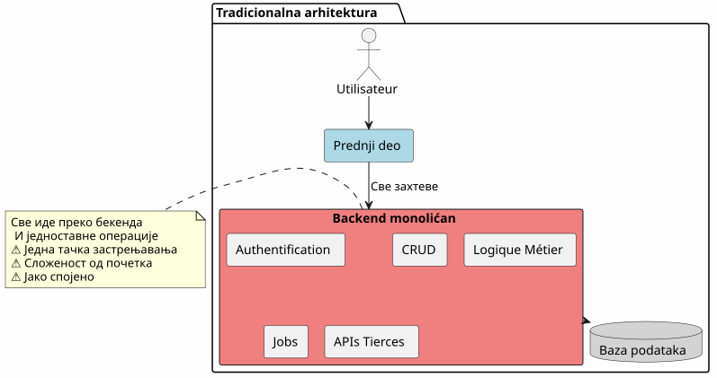
U ovom pristupu, čak i najjednostavniji operacije (čitanje članka, kreiranje komentara) moraju da prodju kroz vaš bckend. Plaćate trošak složenosti odmah sa prvog dana.
Arhitektura BaaS : Sve Delegat
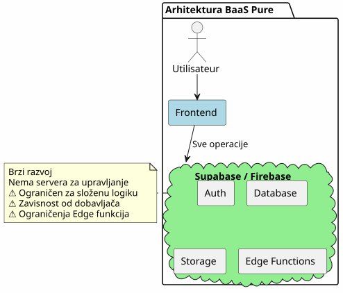
Suprotno, sve delegiranje na BaaS je privlačno na početku, ali brzo pokazuje свои ograničenja kad poslovna logika postane kompleksnija.
Hibridna arhitektura: Odvajanje odgovornosti
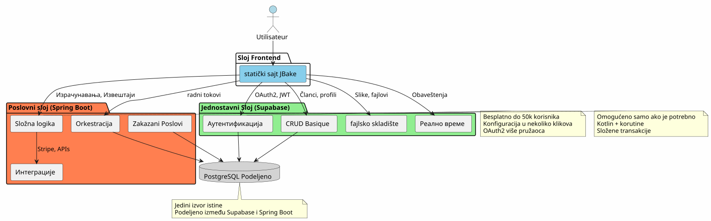
хибридна архитектура јасно одвази одговорности prema сложености и врсти операције.
Принципи концепције
Принцип 1: Почети једноставно, развијај умно
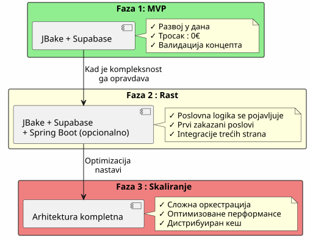
Не градите Spring Boot ако вам није потребно.Почните са Supabase-ом, додајте Spring Boot када је сложеност оправдана.
Принцип 2: Раздељење према природи операције
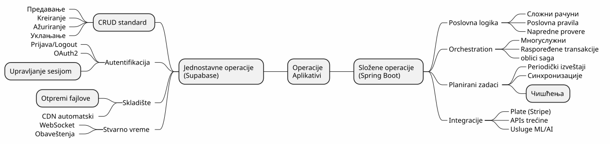
Princip 3 : Jedan Izvor Istine
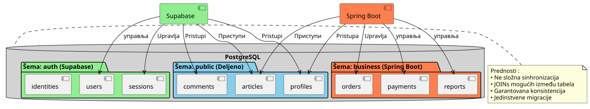
Deljenjem iste instanci PostgreSQL, Supabase i Spring Boot rade na istim podacima bez kompleksne sinhronizacije.
Orkestracija tokova
Tok 1 : Centralizovana autentifikacija
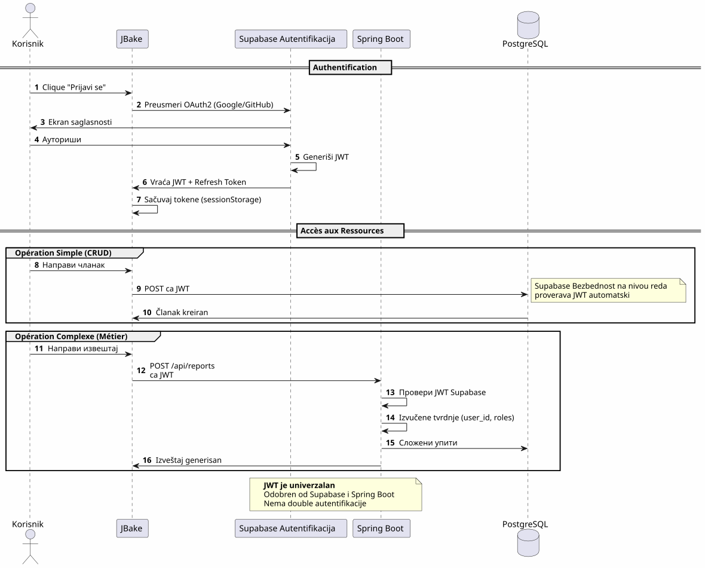
Ključna tačkaJedan proces autentifikacije, jedan JWT, može se koristiti svuda.
Flux 2 : Orkestracija složenog poslovnog procesa
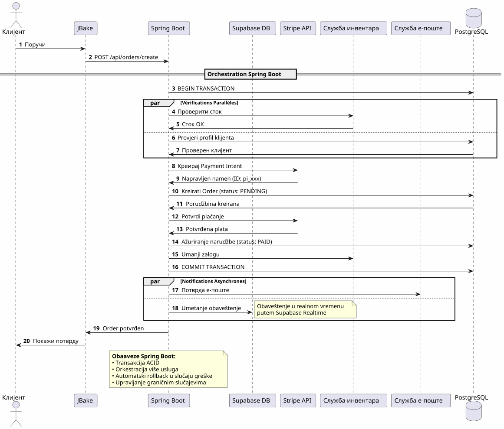
Šta donosi Spring BootPouzdana orkestracija kompleksnih procesa koji uključuju više sistema sa transakcijskom garancijom.
Tok 3 : Zakazani Poslovi i Sinhronizacije
Failed to generate image: PlantUML preprocessing failed: [From <input> (line 11) ] @startuml skinparam backgroundColor #FEFEFE participant "Scheduler\n(Spring Boot)" as scheduler participant "Report Service" as report participant "PostgreSQL" as db participant "External API" as api participant "Email Service" as email participant "Supabase Storage" as storage == Job Quotidien : 2:00 ^^^^^ Syntax Error? (Assumed diagram type: sequence) @startuml skinparam backgroundColor #FEFEFE participant "Scheduler\n(Spring Boot)" as scheduler participant "Report Service" as report participant "PostgreSQL" as db participant "External API" as api participant "Email Service" as email participant "Supabase Storage" as storage == Job Quotidien : 2:00 activate scheduler scheduler -> report : Pokreni generisanje izveštaja activate report report -> db : Preuzmi podatke\nposlednjih 24 sati db -> report : Skup podataka report -> report : Izračuni & agregacije report -> report : Generacija PDF report -> storage : Otpremi PDF storage -> report : URL publique report -> email : Pošalji administratorima \n sa vezom PDF deactivate report == Job Hebdomadaire : Недеља 3h00 == scheduler -> report : Eksternalna sinhronizacija activate report report -> api : Preuzmi vanjske podatke api -> report : Nova podaci report -> db : Ажурирање табела report -> db : Очиштавање застарелих података deactivate report == Job Mensuel : 1. у месецу == scheduler -> report : Fakturacija activate report report -> db : Lista aktivnih klijenata report -> report : Рачунање износа report -> api : Generisanje faktura (Stripe) report -> email : Slanje faktura deactivate report deactivate scheduler note right of scheduler **Nemoguće samo sa Supabase** Edge Functions neprimenljive Za dugacke i ponavljive poslovi end note @enduml
Шта Spring Boot доносиPouzdani zakazani poslovi sa upravljanjem stanjem, automatskim ponovnim pokretanjem i garantovanim izvršenjem.
Матрица одлуке
Kad koristiti Supabase ?
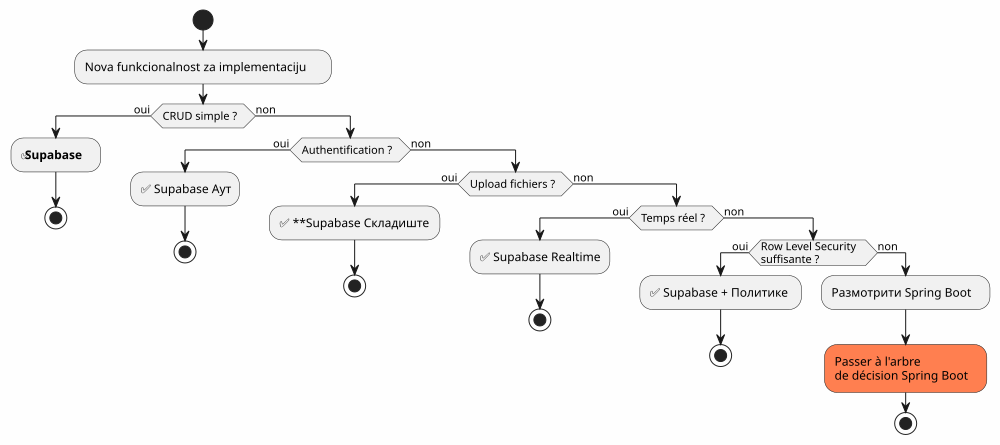
Kada koristiti Spring Boot?
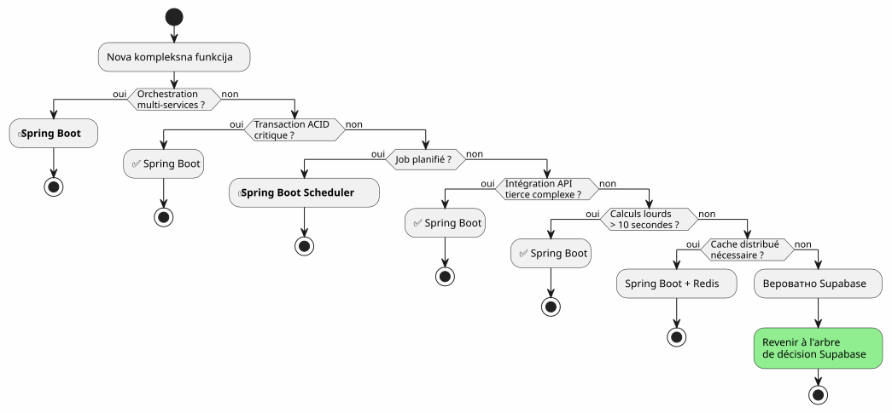
Примери архитектуре по типу пројекта
Блог / Портфолио
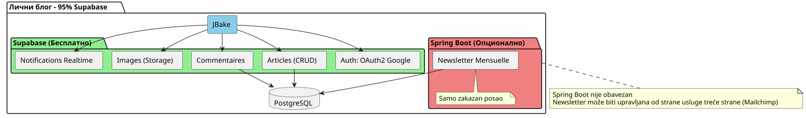
вердикт: 100% Supabase je sasvim dovoljan.
Aplikacija SaaS
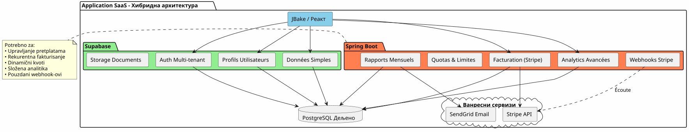
PresudaPotrebna je hibridna arhitektura. Supabase za osnove, Spring Boot za kritični deo (plaćanje, fakturiranje).
E-komerc
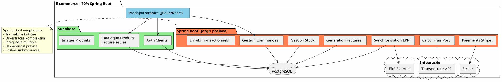
VerdictSpring Boot neophodan je. Supabase samo za autentifikaciju i katalog.
Strategija progresivne migracije
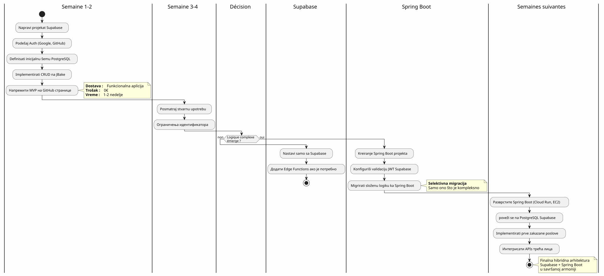
Troškovi i operativna razmatranja
Struktura troškova
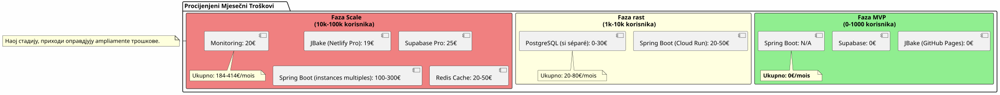
Operativne Odgovornosti
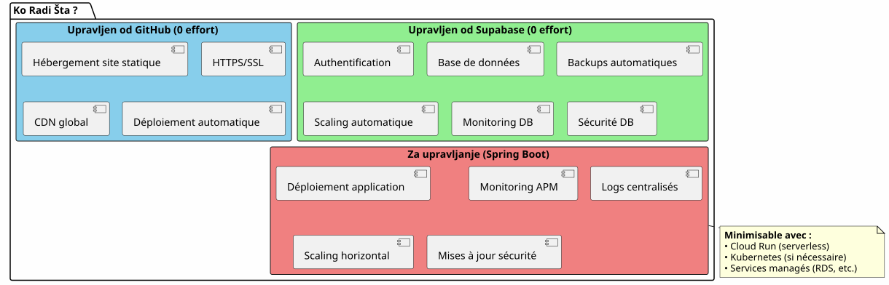
Zaključak : Savršena Ravnoteža
hibridna arhitektura Supabase + Spring Boot nije kompromis, jest jednasinergija.
Принципи за запамћење
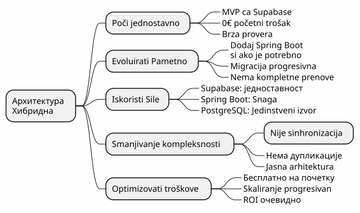
Kada izabrati ovu arhitekturu?
✅ Ova arhitektura je idealna ako :
-
Желите да почнетебрзо (MVP у данма, не у месецима)
-
Оčekujete rast složenosti poslovanja.
-
Želite da minimizujete početne troškove.
-
Volite PostgreSQL i želite jedinstveni izvor istine
-
Vi volite Kotlin i korutine za poslovni kod.
-
Želite da izbegnete potapun zavisnost od dobavljača
❌ Ова архитектура НЕ је прикладна ако :
-
Vaš projekat je jednostavan i ostaje takav (lični blog → 100% Supabase dosta)
-
Već imate ustanovljen backend stek koji kontrolisate.
-
Volite tradicionalni monolith
-
Treba vam .NET, Python ili neki drugi backend jezik.
Konačan uvid cijele slike
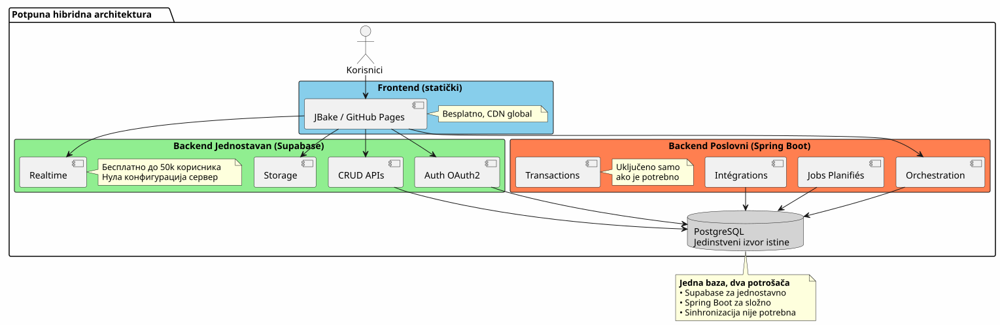
Najbolje od oba sveta
Ova arhitektura vam daje :
Брзина Supabase
-
Početak u satima, a ne u nedeljama
-
OAuth2 autentifikacija u nekoliko klikova
-
Automatski generisani REST API-ji
-
Сервер без конфигурације
Snaga Spring Boota
-
Kotlin i korotine za elegantno asinhrono kod
-
Orkestracija složenih poslovnih procesa
-
Pouzdani zakazani poslovi
-
Garantovane ACID transakcije
-
Potpun Spring ekosistem
💰 Progresivna ekonomija
-
0€ za pokretanje i validovanje
-
Troškovi koji slede rast
-
Непревремено претерано инжењерство
Архитектурна гнучкост
-
Поступна миграција без рефонте
-
Додавање Spring Boot-а само ако је потребно
-
Nema potpuni vendor lock‑in
-
Evolutivna arhitektura
Napredujte dalje
tehnički resursi
Dokumentacija Supabase:
Документација за Spring Boot :
Додатни Членци :
-
Zaštita API-ja pomoću JWT
-
Optimizacija performansi PostgreSQL
-
Uzorci progresivne migracije
-
Upravljanje greškama u distribuiroj arhitekturi
Реални случајеви употребе
Ova hibridna arhitektura se uspešno koristi u :
-
SaaS B2BАутентификация Supabase, фактурирање Spring Boot
-
TržištaKatalog Supabase, transakcije Spring Boot
-
Platforme za sadržajČlanci Supabase, analitika Spring Boot
-
Interni alati: CRUD Supabase, radni tokovi Spring Boot
Lista za pokretanje
Faza 1 - Osnove (Nedelja 1)
-
Kreiraj nalog Supabase - [ ] Konfigurišati PostgreSQL projekat - [ ] Omogući authentifikaciju (Google, GitHub) - [ ] Определити почетну шему - [ ] конфигурисати Row Level Security - [ ] Протестирај API из JBake
Faza 2 - MVP (nedelja 2-3)
-
Implementirati glavne stranice - [ ] Интегрисање OAuth2 аудентификации - [ ] Izrada CRUD oblika - [ ] Podešavanje storage-a za datoteke - [ ] Развернути на GitHub Pages - [ ] Тестирати у реалним условима
Faza 3 - Evolucija (po potrebi)
-
Identifikovati potrebe složene logike - [ ] Kreirati Spring Boot projekt ako je potrebno - [ ] Настроити валидацију JWT у Supabase Poveži se na PostgreSQL Supabase - [ ] Migrirati složene funkcionalnosti - [ ] Implementirati zakazane poslove - [ ] деплојовати Spring Boot (Cloud Run, itd.)
Anti-Patterns da se izbegnu
Ne raditi :
-
Dubliranje podataka između Supabase i Spring Boot
-
Kreirati dve odvojene PostgreSQL baze
-
Samostalno kodirajte autentifikaciju.
-
Korišćenje Spring Boot-a za jednostavno CRUD
-
Претерати са архитектуром од почетка
-
Ignoriši Row Level Security od Supabase
Umesto:
-
Deliti jednu bazu podataka PostgreSQL
-
Нека Supabase управља аутентификацијом
-
Koristi Spring Boot samo zbog kompleksnosti
-
Početi jednostavno, napredovati postupno
-
Koristi prednosti svake tehnologije
-
Zaštiti pomoću RLS na nivou baze podataka
Perspektive razvoja
Dodavanje novih mogućnosti
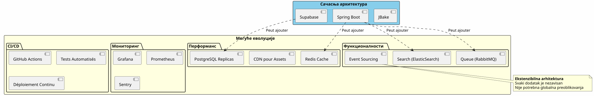
Horizontalno skaliranje
Когда ваша апликација расте, хибридна архитектура се естествено скалира :
Supabase :
-
Automatski se skalira do miliona operacija.
-
Read replicas za performanse citanje
-
Опоравек до тачке у времену за безбедност
Spring Boot :
-
Više instanci iza balansera opterećenja
-
Stateless design olakšava horizontalno skaliranje.
-
Kubernetes za orkestraciju ukoliko je potrebno
PostgreSQL :
-
Particioniranje za velike tabele
-
Grupisanje veza (PgBouncer)
-
Sharding je stvarno neophodno (rijeđe)
Arhitektonski svedok
Startup SaaS (50k korisnika)
Platforma E-učenja (10k korisnika)
_ Supabase OAuth2 autentifikacija nam je uštedio 3 nedelje razvoja. Automatski generisani API-jevi upravljaju nasim celim katalogom kurseva. Spring Boot se koristi samo za PDF sertifikate i e-mailove o napretku. Arhitektura jednostavna, drživa i skalabilna. _
Tržište B2B (3 000 korisnika)
_ Spring Boot rukuje transakcijama između kupaca i prodavca (kritično). Supabase rukuje svim ostalim: profili, poruke u realnom vremenu, dokumenti. Fakt da dele istu PostgreSQL bazu podataka elimira potrebu za kompleksnom sinkronizacijom. Najbolji arhitektonski izbor koji smo uradili. _
Синтеза : Модерна архитектонска парадигма
Hibridna arhitektura Supabase i Spring Boot predstavlja nov paradigam:arhitektonska specijalizacija.
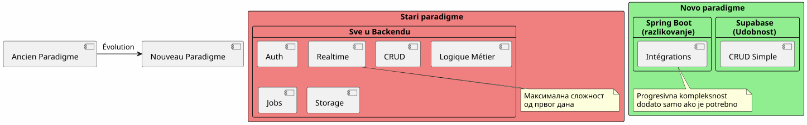
Osnovni princip :Ne gradite ono što već postoji u obliku usluge. Fokusirajte se na ono čime se vaša aplikacija razlikuje.
Правило 80/20
U većini aplikacija :
-
80% operacijaони су стандардни CRUD → Supabase
-
20% операцијаpotrebna je poslovna logika → Spring Boot
Ovo prirodno pravilo objašnjuje hibridnu arhitekturu.
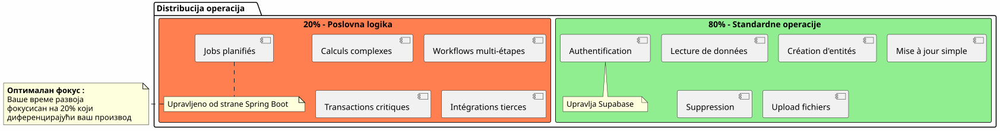
Коначни закљутак
Hibridna arhitektura nije tehnički kompromis, ona jestrateška odluka.
Ona vam omogućava:
-
✅ Brzo pokretanje funkcionalnog MVP-a
-
✅ Validirajte svoj tržište bez teških ulaganja
-
Napredovati postepeno kada je zahtevana složenost
-
Kontrolisati vaše troškove na svakoj fazi
-
✅ Koristiti najbolje od svake tehnologije
-
Избегајте прематурно прекомерно инжењерство
-
Сачувати флексибилност за будућност
Ona predstavlja :
-
🎯PragmatizamСвака технологија где она отлично ради
-
🚀Brzinaminimalno vreme izlaza na tržište
-
💰ЕкономијаTroškovi usklađeni sa vrednošću
-
🔮ЕволутивностArhitektura koja raste sa vam
-
🛡️РубустностIspitivani i pouzdani usluge
Vaš Sledeći Korak
Ако вам ова архитектура говори, овде можете да почнете :
-
Napravite nalog na Supabase(besplatno)
-
Definirajte vašu minimalnu podatkovnu šemu
-
Postavite OAuth2 autentifikaciju
-
Kreirajte svoju prvu JBake stranicu koja koristi API
-
Разместите на GitHub Pages
Ћете имати функционалан MVP уnekoliko dana.
Spring Boot će doći prirodno kada vam bude potreban. Ne pre toga.
Hibridna arhitektura je umetnost gradnje tačno onoga što je potrebno, kad je potrebno.
Добар развој! 🚀
Podelite ovaj članak ako mislite da vam može pomoći drugim programerima da prave arhitektonske odluke.
Повезани чланци
18 May 2026